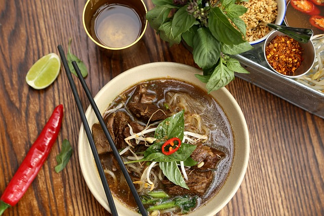

Thai Coconut Soup

Thai Coconut Soup
This Thai coconut soup is full of authentic,
bold and delicious flavour. Serve over steamed rice.
Ingredients
- 1 tablespoon vegetable oil
- 2 tablespoon grated fresh ginger
- 2 teaspoons red curry paste
- 1 stalk lemon grass,minced
- 4 cups chicken broth
- 2 tablespoon fish sauce
- 1 tablespoon light brown sugar
- 3(13.5 ounce) cans coconut milk
- 1/2 tablespoon fresh shiitake mushrooms, sliced
- 1 pound medium shrimp - peeled and deveined
- 2 tablespoons fresh lime juice
- 1/4 cup chopped cilantro
Steps
- Heat oil in a large pot over medium heat. Add ginger, curry
paste, and lemongrass;
cook and stir in the hot oil for 1 minute.
- Gradually stir in chicken broth, then stir in fish sauce and
brown sugar;
reduce heat to low and simmer for 15 minutes.
- Add coconut milk and mushrooms; cook and stir until mushrooms
are soft,
about 5 minutes.
- Add shrimp; cook until no longer translucent, about 5 minutes.
Stir in lime juice;
season with salt and garnish with cilantro.
Back to Main Page